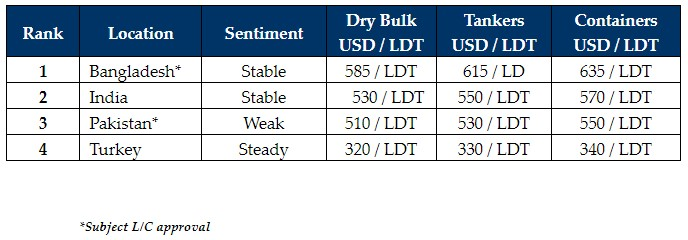

inWeekly Demolition Reports19/06/2023

This week, the big news revolved around the momentous and much anticipated ratification of the Hong Kong Convention in Bangladesh thathas finally come to pass. Two weeks ago, after high-level local meetings, all that remains now is for the Marshall Island or Liberian Flags to complete the approval process so that the HKC can enter into force.
Bangladesh levels and L/C approvals have continued to struggle post-budget, and it seems that for the time being, there will be some stricter requirements imposed from the Central Bank for Chattogram Recyclers to secure tonnage. Hence, a lower overall appetite has emanated from this market this week, while much of the demand appears to be satiated for the moment and the markets seem to be taking a breather, especially as the monsoons start settling in.
India is not yet on par with Bangladesh and lacks some of the aggression and demand from local Buyers to acquire, whilst Pakistan is totally out of the buying for reasons that have been well documented for weeks now. Lastly, Turkey seems to be heading Pakistan’s way as their levels are closest to each other from all the major markets and both markets continue to struggle to secure tonnage due to currency, and scarcity issues.
Indian fundamentals remained firm this week as the Rupee appreciated against the U.S. Dollar and amidst continued demand for raw materials, steel plate prices firm. We are not at the peaks seen last year when the USD 700/LDT mark was breached. Notwithstanding, at these historically firm levels into the USD 500s/LDT and even close to USD 600/LDT, we are still 30% above the decade’s average.
Finally, there is still an ageing fleet that needs to be scrapped, but many owners are not yet biting the bullet and choosing to sell while they still have time before surveys and can make charter income today. However, BIMCO has recently estimated that double the amount of tonnage will be recycled over the next 10 years due to incoming regulations and the order book, compared with the previous 10 years.
For week 24 of 2023, GMS demo rankings / pricing for the week are as below.

📄 Download PDF: Ship-recycling-market-insight-week-24-2023-Bangla-Ratifies-HKC.pdfSource: GMS,Inc. ,https://www.gmsinc.net/gms_new/index.php/web